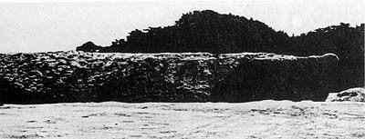

ORD 11: 岩船
 ↑阿久根七不思議／阿久根市の画像から
岩船は、阿久根の伝承として伝えられる大岩である。現在では砂に沈み確認できない。伝説、神社、地名の由来とセットで語られることが多い。
阿久根市ホームページ
折口海岸の折口川河口左側にある大岩です。日本三大急潮に数えられ海の難所として知られる阿久根北西部にある黒之瀬戸のうち最も潮の速い梶折鼻沖で、その昔梶が折られた船が折口海岸に流れ着き、そのまま岩となったものと伝えられています。現在は潮流の変化により完全に埋まってしまっています。また、その船に積んであった大鍋が流れ着いたとされるところには鍋石があり、地名も鍋石となっています。さらに鍋のふたや餅などが流れ着いたところとされる場所もあり、地名もそれらのものに起因しているといわれています。 ↑阿久根七不思議／阿久根市の説明文から。
- 現在は完全に埋まっている
- 地名に残っている
鹿児島県神社庁
古老の言い伝えによると、神代の昔、御祭神が石樟船に乗りここへ流れ着かれたので祀られたという。当社より五十間ばかりの波限にその石樟船といわれる大岩があり、帆柱を立てた跡や、艫には柁床の跡があり、又、柁は出水郷隼人の瀬戸の柁折の瀬というところにある奇岩がそれであるという。 阿久根市誌(昭和49年刊)1020頁にある言い伝えによれば、建久三年(一一九二)鎌倉幕府の命により、山門院に下向した田上資一が氏神として建立したものといわれている。棟札には「慶長十六亥八月十四日大檀那藤原義虎公 子孫繁昌…」と記されている。 出水風土誌(大正4年刊,昭和51年復刻)523頁によれば 建久三年三月鎌倉の命に依り山門院筒田郷に下向した、上出水村武本田上氏の始祖田江資一(四代目より田上を名乗る)が氏神として創建す。当社の傍らに船形の巨岩あり。田上隠岐守漂着の軍用船化石なり。地理纂考に曰く往古漂着せし唐船の化石であると。
↑石船神社 | 鹿児島県神社庁から。
- 神が流れ着いて祀られるようになったという話もある
- 田上隠岐守という名前は共通して出てくる
広報あくね
折口川の鉄橋から、筒田よりの線路下に、直径二米、高さ一・五米位のふたもついた鍋の形をした大石が鍋石です。これには、次のような物語があります。昔、丹後の国の田上隠岐守が、ある戦に破れ、海から逃れるときのことでした。九州の西海岸を南下して、天草をすぎ黒之瀬戸を通るとき大嵐にあいました。梶折鼻で梶が折れ、帆の木で、帆柱が折れて梶も柱も海岸に打ち上げられてしまいました。船は潮の流れに漂いながら、折口川の川口に乗り上げてしまいました。帆は岩船の持帆山に流れつきました。船に積んであった大鍋は、鍋石に流れ着き、鍋の釣は筒田に、年の瀬もおしつまった師走で沢山積んでいた餅は、餅井まで流れて行きました。梶が折れた処が梶折鼻。帆柱が折れた処が帆の木、船が座礁した処が岩船、帆が打ち寄せられた処が持帆山。鍋が流れ着いた処が鍋石。釣が筒田。餅が餅井と、それぞれの処で化石となったといわれます。地名もこの物語からつけられたともいいます。岩船は長さ十数米の岩で船の形によくにて帆柱を立てた後、人の足跡等もあるといわれていましたが、今は護岸工事のため砂に埋もれて、見ることができなくなってしまいました。市内大丸区 草原 新さん提供
- 地名に関する説明が詳しい
- 護岸工事のため砂に埋もれた
阿久根町郷土誌
折口にあり折口駅の北約三町、無格社伊勢神社付近の水田中にありて形幅も鍋に似たり。古老の口碑に依れば神代の昔石船神社の祭神蛭子命の石樟船に乗り折口に着かせ給いし御所持釜化石したるものなりと言い伝え今なお伊勢神社の祭典には法連を張りて敬意を表す。伝説に丹後国の某城主田上隠岐守某戦争に破れ逃れて海上薩摩に入り暴風に遭ひ黒瀬戸にて舵を折る。舵下出水(三笠村)字大漉と黒との中央海岸に押し立ち化石となりて今なお存在す。古来此地を舵折と呼ぶは之が為なり。船は風に任せて南に逸走し黒と深田の中央にて帆破れ帆柱折れて惨状を来す、帆柱はまた化石となり、岩船すなわちこれなり。岩船の南約一町半の所に持帆山と称する所あり。この船漂着の際帆の打ち寄せたる所なりという本船に積み込みたる軍用大鍋は、折口の内鍋石に漂流して沈み、化石となりて今なお存す。鍋の周囲二丈五尺高さ五尺に近し、蓋は全く分離せるものの如し。此の地を鍋石と称するはこれがためなり。その釣は脇本の内筒田に沈む、よってこの地を釣田といえしが、後世筒田と転訛せしものなりと。その兵糧は同地餅井須衛門氏所蔵すと、その数三六五個ありという。餅の化石に因み初めこの地を餅と称えしを後世餅井に転訛せりと。筒田の人古来門松を立てず。曰く隠岐守難船漂着の騒ぎに依り、はてはついに門松を建つる所の**なかりし遺風今に存するなりという。出水誌 編者いわく以下の伝説は阿久根尋常高等小学校にて収録せられたる郷土伝説集をそのまま採録せるものなり読者これを諒せよ
- 地名に関する説明が詳しい。ほかの説明とおおむね一致している
- 岩船神社の祭神は蛭子である
- 鍋石地区にある伊勢神社の祭典では鍋石に敬意を払う